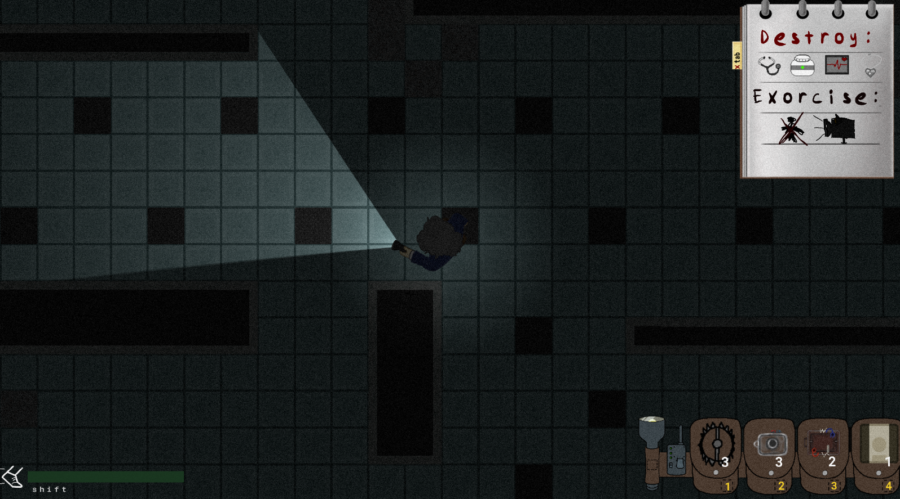
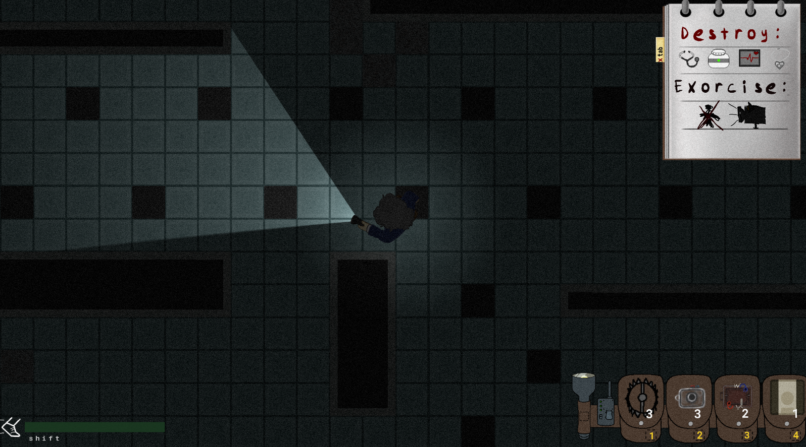
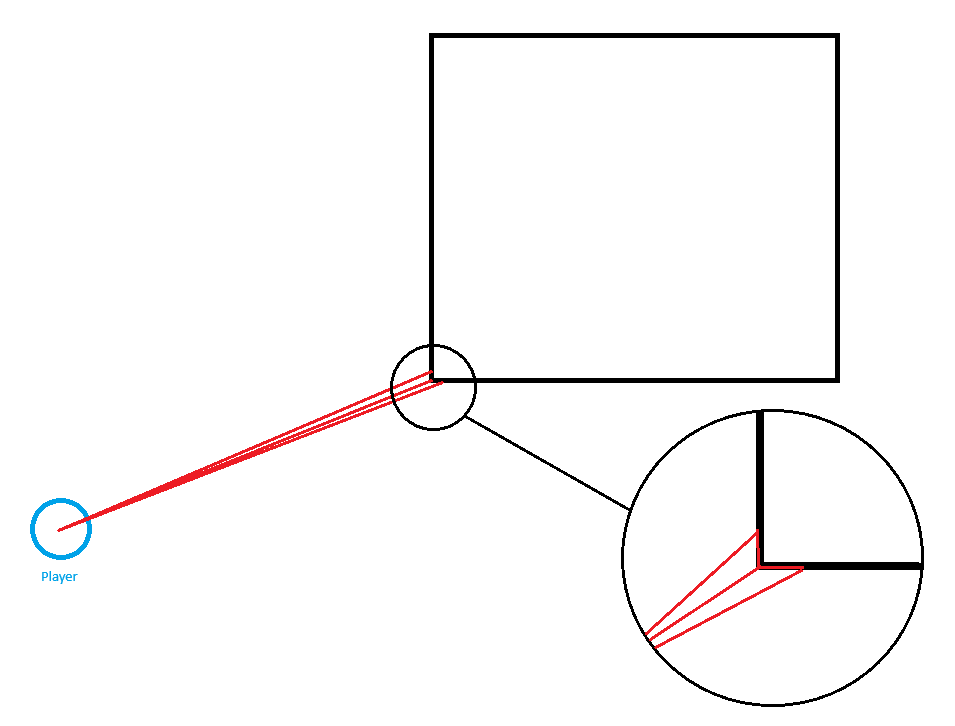

My current project, DREAD IT is a mysterious, single-player
game focused on exploration, strategy, and execution. In DREAD IT, you
play Peggy Caine, a retired cop turned Private Investigator. However,
an alarming number of reports come into her office of various disturbances
around the city, and a love for hunting monsters is awakened.
Made in a custom 2D engine using C++ and OpenGL.
You can wishlist it now on steam here
and releases Nov 1st 2024.
 

PGE is the general graphics interface for our engine. I wanted to
create a sort of library of OpenGL calls abstracted beneath an interface. Sample
code is hard to show for this so I'll provide a graphic below:
For this game, we wanted a dark and scary vibe where the player could
easily lose the monster. To do this we needed a flashlight for the player that
interacted with the environment. After lots of hard work this is the solution I came to.
The code below shows the steps in the algorithm:
void Flashlight::DistanceCull(glm::vec2 pos)
{
Scene* scene = SceneSystem::GetCurrent();
Tilemap* tilemap = scene->GetMap();
std::vector const& edges = tilemap->GetEdgePool()._lines;
_lines.clear();
_culled.clear();
for (LineSegment const& line : edges)
{
// Cull based on distance
if ((glm::length(line._start - pos) < _cullDist) || (glm::length(line._end - pos) < _cullDist))
{
_culled.push_back(line);
}
}
}
Once we Have these lines we can now remove all the lines that are clearly crossing others. The IsCrossing function below is a simple point line algorithm.
bool Flashlight::IsCrossingAny(glm::vec2 line, glm::vec2 pos) const
{
for (unsigned i = 0; i < _culled.size(); ++i)
{
glm::vec2 dummy(0);
if (IsCrossing(_culled[i], pos, line, dummy))
{
return true;
}
}
return false;
}
After this is called we can now start the tricky stuff. At this point we're basically left with all the lines going directly to each corner, being the line segment start and end. Our next goal is to shoot out two more lines for each direct "anchor" line. The 2nd parameter end in the function is rotated slightly before its passed in. This is done twice, once clockwise and counter-clockwise. The goal is to end up having triangles that we can pass to the shader.

bool Flashlight::CastRayExtension(glm::vec2 start, glm::vec2 end, glm::vec2& colPoint) const
{
glm::vec2 shortestPoint((float)FOREVER, (float)FOREVER);
glm::vec2 newLine(0);
bool found = false;
for (LineSegment const& edge : _culled)
{
// We need to get the colPoint with the shortest length from it to pos
if (IsCrossing(edge, start, end, colPoint))
{
newLine = colPoint - start;
if (glm::length(newLine) < glm::length(shortestPoint))
{
shortestPoint = newLine;
found = true;
}
}
}
colPoint = shortestPoint + start;
return found;
}
This is then done for all the lines that we were given. It is then sorted by angle and pushed into a new vector that we pass to the shader. The cone is also passed to the shader using two vectors.
In the shader we want to do a few things:
1. Only calculate within the cone
2. Use barycentric coordinates to see if the pixel should be lit
3. Make the shader look nicer using feathering and fading
Step 1:
for (int j = 0; j < vertCount[i + 1]; ++j)
{
if (!IsInsideTriangle(flashlight[vertCount[i]], cone[0], cone[1]))
{
continue;
}
// ...
Step 2 and 3:
float CalculateFlashlight(vec2 p0, vec2 p1, vec2 p2, float factor, float radius, float falloff,
float innerRadius, float innerFalloff, vec2 cone0, vec2 cone1)
{
float spot = 0;
// Use barycentric coords to check inside triangle
if (IsInsideTriangle(p0, p1, p2))
{
// Feathering the edge of the flashlight
spot = CalculateSpotlightInverse(p0, radius, factor, falloff, innerRadius, innerFalloff);
vec2 middle = cone0 + (0.5 * (cone1 - cone0));
float halfAngle = degrees(acos(dot(middle, cone0) / (length(middle) * length(cone0))));
vec2 pixelVec = worldPos.xy - p0;
float pixelAngle = degrees(acos(dot(pixelVec, middle) / (length(pixelVec) * length(middle))));
if (halfAngle - pixelAngle < featherAmount)
{
return clamp((halfAngle - pixelAngle) / 4.0, 0, spot);
}
}
return spot;
}
After all this we get the final result: